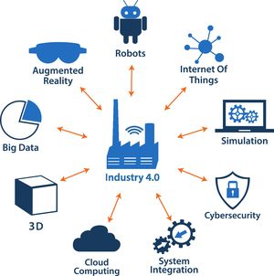

INDUSTRIE 4.0 : NOUVELLE RÉVOLUTION INDUSTRIELLE
Le terme industrie 4.0 est apparu la première fois en 2011 au Forum mondial de l’Industrie de Hanovre. Le projet “Industrie 4.0” ou “Industrie du futur” correspond à une nouvelle façon d’imaginer les moyens de production. Le 4, c’est pour marquer cette 4éme révolution industrielle.

Aujourd’hui, il n’est plus question qu’un moyen de production produise à la chaîne (ou plutôt reproduise) un produit des milliers de fois. Nous sommes entrés dans l’ère de la personnalisation des produits. Le consommateur veut un produit complètement personnalisé, qui ne ressemble pas à celui de son voisin. L’industrie 4.0 s’engage à répondre à cette exigence de produits uniques et personnalisés tout en conservant des coûts équivalents, et cela malgré les faibles volumes de production engendrés. C’est pourquoi l’un des défis de cette 4ème révolution industrielle est de réussir à connecter le besoin du client à l’organe de production. Cette connexion ne peut se faire sans l’apport des nouvelles technologies, qui devront être exploitées dans cette “nouvelle usine.
- Les 5 idées clés à retenir
-
Pour les Allemands, l’Industrie 4.0 tire son nom de l’avènement de la 4ème révolution industrielle : l’introduction de l’internet des objets dans la production.
-
L’Industrie 4.0 répond au besoin d’individualisation croissante des produits et à la peur de voir des géants de l’internet comme Google capter l’exclusivité de la relation avec le client et monopoliser l’accès à ses données d’usage.
-
Il s’agit de construire une offre allemande dans les technologies liées aux process de production et d’anticiper l’émergence de nouvelles chaînes de création de valeur, de nouveaux business models industriels avec leurs impacts en termes d’organisation du travail et de compétences métier.
-
Au-delà des avancées technologiques, le projet Industrie 4.0 initie un vaste mouvement de coopérations, de partenariats et d’alliances pour marier les industries mécaniques, électrotechniques et les technologies de l’internet.
-
Dans le mouvement de transformation digitale du tissu industriel, le Mittelstand premium (l’équivalent de nos ETI) joue un rôle majeur d’entraînement vis-à-vis des entreprises plus petites.